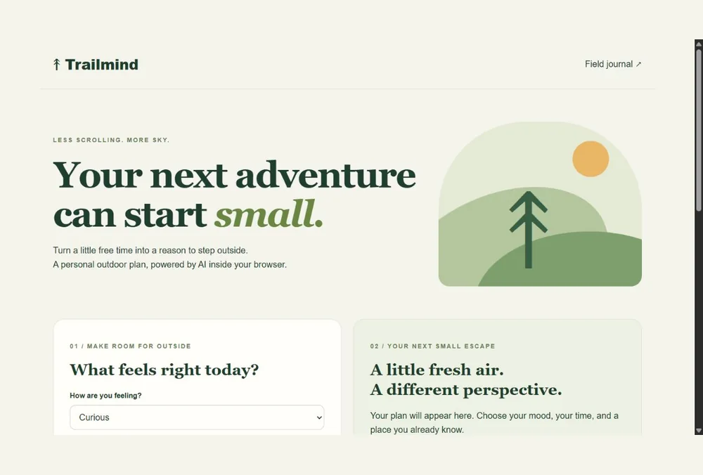
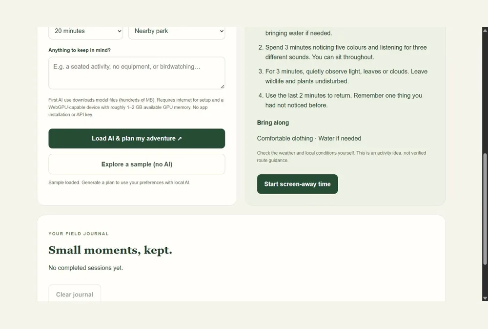
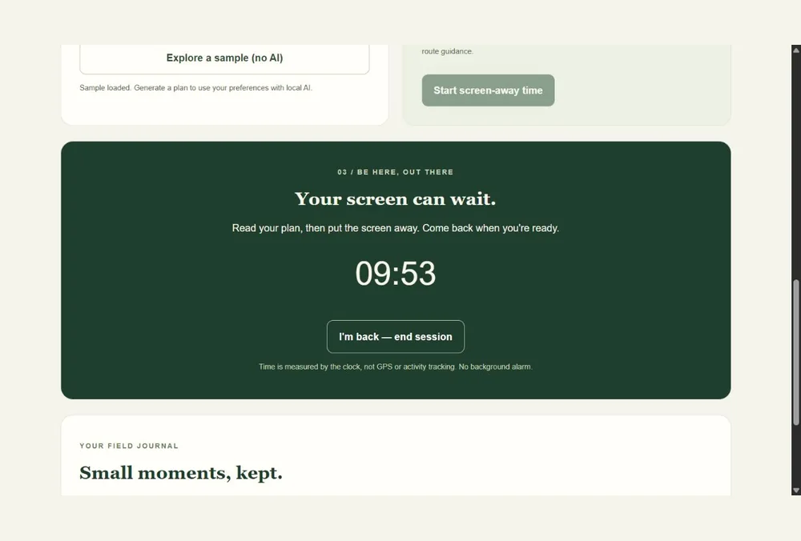

Case study
Trailmind
I added a prewritten sample so visitors can try the outdoor planner while skipping the AI model download.

The goal
Help someone who has a short break and a familiar place nearby decide what to do outside. The experience starts with three choices: mood, time, and surroundings.
The approach
I moved from a separate local setup to in-browser inference with WebLLM. The AI path needs a compatible browser and a model download, so I added a prewritten sample that visitors can try immediately.
What to expect
AI generation needs a WebGPU-capable browser and a first-run model download. The sample opens immediately, and journal entries stay in the browser.
The interface in use


Next case study